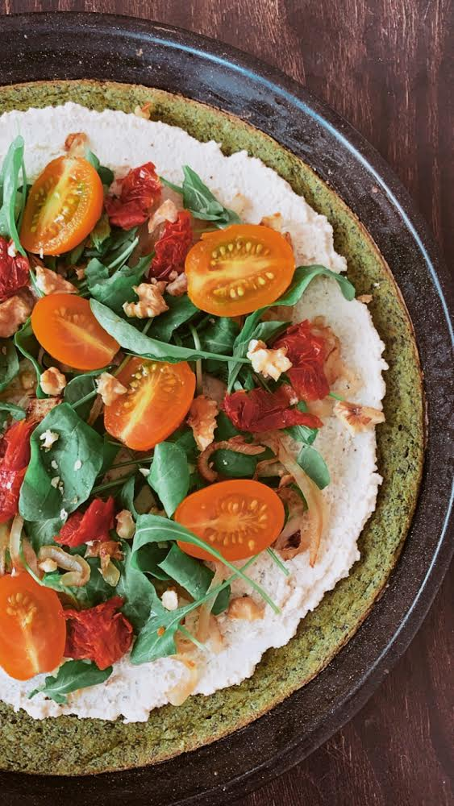

Ingredientes: -1 taza de harina de garbanzos -Hojas verdes -Condimentos -1/2 taza de agua Procedimiento: -Colocar los ingredientes en una procesadora y procesar bien. -Ir agregando agua hasta que quede una mezcla cremosa (ni muy líquida, ni muy espesa), debe quedar similar a la mezcla de los panqueques. -Precalentar el horno y engrasar una fuente para horno. Dato: calentar la fuente en el horno (antes de poner la mezcla) por 10 minutos. Retirar y esparcir la mezcla en la fuente. -Hornear a fuego bajo por 20 minutos o hasta lograr la crocantes deseada. -Retirar, dejar enfriar y luego despegar de la fuente. 𝚀𝚄𝙴𝚂𝙾 𝙳𝙴 𝙲𝙰𝙹Ú Ingredientes: -1/2 taza de castañas de caju remojadas (entre 2-8 horas) -1/2 taza de porotos alubia -Levadura nutricional -Condimentos (sal, pimienta, etc.) -Agua cantidad necesaria Procedimiento: -Procesar las castañas de cajú con agua (que cubra apenas las castañas) hasta formar una crema. Incorporar el resto de los ingredientes y procesar bien -Agregar agua según la consistencia que se desea -Colocar sobre la base!
RECETAS SALUDABLES
BASE DE FAINA
TIRAMISU PROTEICO
BASE: -30 gr de porotos o garbanzos cocidos -20 gr de harina de almendras -15 gr de harina integral -1/2 scoop de proteína -20 gr de cacao amargo -C/n de líquido Procedimiento: -Colocar todos los ingredientes en una procesadora hasta integrar bien. -Esparcir la mezcla en una placa para horno y cocinar 20’ (va a depender de lo fina que les haya quedado). -Una vez retirada del horno, desgranar la preparación con las manos y colocar la mitad en la base del recipiente o frasco. -Luego colocar un poco de café concentrado para darle gusto y humedad *en este momento se podría agregar algún fruto seco o chocolate amargo partido si se desea. CREMA: -200 gr de tofu orgánico -15 gr de castañas de cajú previamente remojadas -1 banana congelada -1/2 scoop de proteína en polvo Procedimiento: -Procesar las castañas hasta formar una crema, luego agregar el resto de los ingredientes hasta que quede una mezcla suave -Colocar la mitad sobre la base, luego colocar el resto de la mezcla de la base y nuevamente la crema por encima para que queden dos capas. -Refrigerar unos minutos
CRACKERS DE GARBANZO Y COCO

-Ingredientes:
1 taza de harina de garbanzos
1/2 taza de coco rallado o harina de coco
1/2 taza de agua
4 cucharadas de lino
2 cucharadas de aceite
2 cucharadas de levadura nutricional (opcional)
-Procedimiento:
Mezclar la harina de garbanzos y semillas de lino junto con el agua. Dejar reposar por 1 hora.
Si se utiliza coco rallado, procesar hasta formar una harina.
Integrar todos los ingredientes.
Aceitar una placa para horno o utilizar papel manteca.
Colocar la preparación extendiéndola sobre la placa y luego marcar las crackers según la
forma y tamaño que se quiera (solo marcar para que luego sea más fácil despegarlas y
cortarlas).
Hornear por 15-20 minutos o hasta que estén bien doradas y crujientes en horno precalentado a
200 grados!